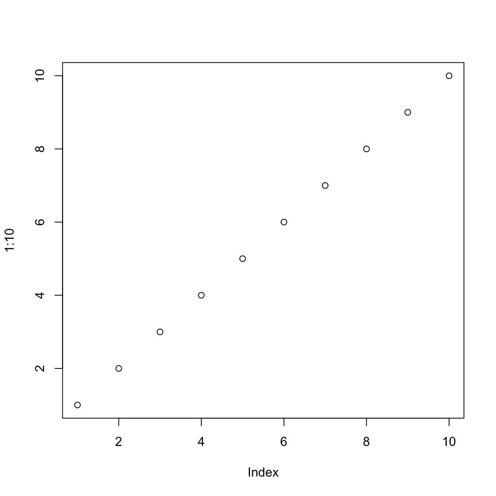
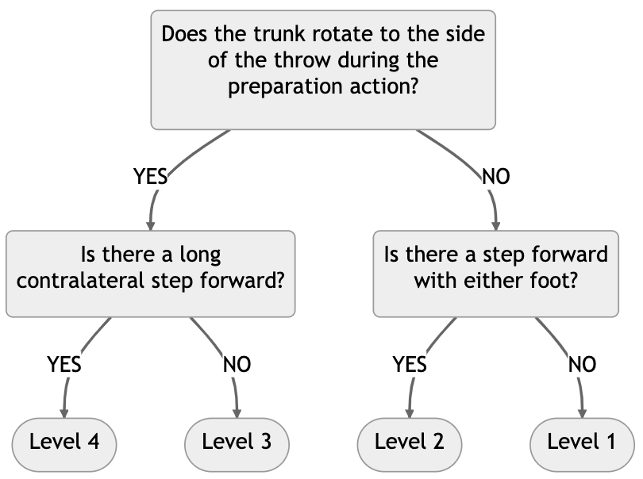
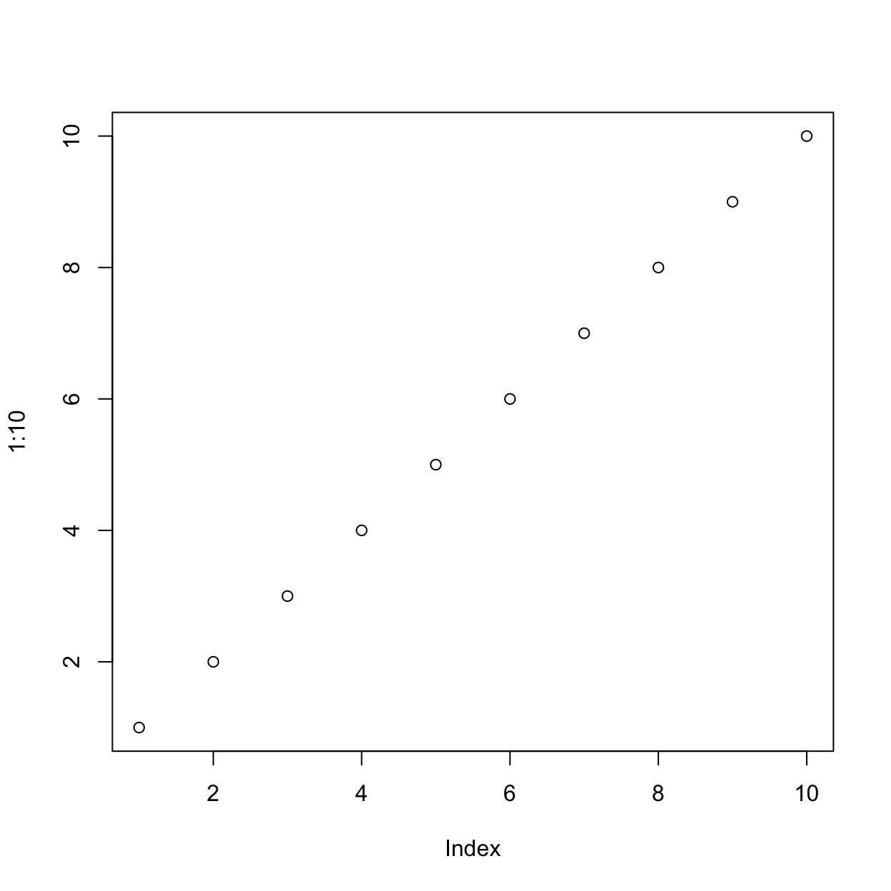

Figure 1
This is the figure caption.

Note. This is a note below the figure.
Ana Fulana1, Blanca Zutana1, Carina Mengana2,3, and Dolorita Perengana4
1Department of Psychology, Ana and Blanca’s University
2Carina’s Primary Affiliation
3Carina’s Secondary Affiliation
4Buffalo, NY
Ana Fulana  https://orcid.org/0000-0000-0000-0000
https://orcid.org/0000-0000-0000-0000
Carina Mengana  https://orcid.org/0000-0000-0000-0001
https://orcid.org/0000-0000-0000-0001
Dolorita Perengana  https://orcid.org/0000-0000-0000-0003
https://orcid.org/0000-0000-0000-0003
Ana Fulana is now at X University. Carina Mengana is deceased.
This article is based on data published in Pulaski (2017).
Author roles were classified using the Contributor Role Taxonomy (CRediT; https://credit.niso.org/) as follows: Ana Fulana: Conceptualization and Writing - original draft; Blanca Zutana: Project administration; Carina Mengana: Formal Analysis; Dolorita Perengana: Writing - review & editing, Methodology, and Formal Analysis
Correspondence concerning this article should be addressed to Ana Fulana, Department of Psychology, Ana and Blanca’s University, 1234 Capital St., Albany, NY 12084-1234, Email: sm@example.org
Fundamental movement skills (FMS) are considered the building blocks for developing specialized sports skills. In addition, fundamental movement skill competency has been linked to decreased levels of obesity and increased levels of physical activity/sports participation. Thus, assessing FMS development is crucial. This study aimed to collect evidence for concurrent validity, expert-rater agreement, and inter/intra-rater reliability for the ANONYMIZED. Participants were 34 children ages 5-10 years and 5 raters. Partial Pearson correlations comparing the scores of both tests indicate a moderate to strong correlation for locomotion (rxy.z =.52, p < .01), object manipulation (rxy.z =.59, p < .001), and total scores (rxy.z =.63, p < .001). The expert-rater agreement was assessed by comparing the live scores of five raters with those of an expert. Inter-rater reliability was assessed by comparing the scores across the five raters. Intra- rater reliability was assessed by comparing each rater’s live and video scores. Weighted kappa scores ranged from .51 to .83, .50 to .89, and .60 to .87 for expert-rater agreement and inter and intra-rater reliability, respectively. These results provide further validity and reliability evidence for the FG-COMPASSANONYMIZED. Further studies involving children with different ethnic backgrounds and larger sample size are recommended. ADD LIMITATIONS HERE.
Keywords: Assessment, Fundamental Movement Skills, Children, Movement Competence
It is crucial for young children to master fundamental movement skills, which can have both positive and negative impacts on their development and lifestyle. Competence in motor skills plays a significant role in their ability to participate in physical activities (Castelli & Valley, 2007). Engaging in physical activities is positively correlated with fundamental movement skills (FMS), particularly when the activities involve moderate to vigorous exertion (Bellows, Davies, Anderson, & Kennedy, 2013; Carroll & Loumidis, 2001; Fisher et al., 2005; Lemos, Avigo, & Barela, 2012; McKenzie et al., 2002) and negatively associated with obesity (Bayer, Bolte, Morlock, Ruckinger, & von Kries, 2009; Graf et al., 2004; Lopes, Stodden, Bianchi, Maia, & Rodrigues, 2012). Studies have shown that children who lack motor skill proficiency are less physically active (Fisher et al., 2005; McKenzie et al., 2002) and are more likely to be overweight or obese (Cliff et al., 2012).
Thus, assessing the development of fundamental movement skills (FMS) is crucial for preschool and elementary school children. However, it has been noticed that gross motor skills are often ignored in childhood education. Ulrich (2000) points out that assessment tools can help detect delays and ensure children receive the necessary support and guidance. If not addressed early, delays in motor skill development may hinder future gross motor skill development (Ulrich, 2000), and likely impact the acquisition of specialized skills (Gabbard, 2012). According to Provost, Crowe, and McClain (2000), a developmental delay is defined as a 25% or greater difference between the child’s actual age and their developmental age. If a motor delay is detected early, practitioners, parents, and educators can implement strategies to help the child to catch up.
There are several instruments designed to assess and evaluate the development of fundamental movement skills. In general, these instruments are not designed to be administered in a live setting by a single practitioner. Often, test administrators are required to film skill performances and later code/rate the videos. Therefore, a more practical assessment tool would allow professionals to perform live assessments without the need to videotape performances. Recently, Furtado (2012) proposed a decision-tree method for assessing the skill level of a live FMS performance. A decision-tree is a decision hierarchical model that uses a tree-like method of decisions and potential consequences, leading to a final decision. This approach has traditionally being used in computer science and more recently in machine-learning, but can also be used in the behavioral sciences for making decisions based on empirical data (Von Winterfeldt & Edwards, 1986).
In the case of FMS, the empirical data are derived from validated or hypothesized developmental sequences from various motor skills (Halverson & Williams, 1985; Painter, 1994; Roberton & Halverson, 1988; Strohmeyer et al., 1991). Following these studies, performance criteria are proposed for the motor skill under investigation. These performance criteria can be used for the development of informal checklists and instruments that are used assess fundamental movement skill proficiency.
A decision-tree created for the skill of overhand using the method proposed by Furtado (2012) is depicted in Figure 1. The flowchart is comprised of a) decision nodes (questions) b) chance nodes (Yes or No), and c) end nodes (levels). Although several performance criteria can be proposed for a skill, only three are selected to form the decision-tree of a skill based on the method suggested by Furtado (2012). These performance criteria are then turned into questions which are the decision nodes of the decision-tree. In Figure 1, the top decision node contains a discriminatory question. It’s purpose is to differentiate between levels 1 and 4 (end nodes). If the chance node is YES, the decision takes the path on the left and the observer is presented with a confirmatory question, which is meant to verify if a performer is at level 4 (chance node is YES) regarding proficiency of the skill of overhand throw. If the decision-tree fails to confirm a level 4 (chance node is NO), then the performer is assessed as level 3. The same applies to the right side of the decision-tree, except that the purpose is to confirm whether the performer is at level 1. The decision-tree approach simplifies the process of assessing fundamental movement skill live performances as only two performance criteria are used when deciding the proficiency levels of performers.

The development of an assessment tool involves several steps to confirm validity and reliability evidence of its scores. The ANONYMIZED is a criterion-related and process-oriented assessment tool developed for school settings and is the instrument under investigation in this study. Multiple studies have been conducted to collect psychometric evidence for the FG-COMPASS, namely, content-related validity (Furtado, 2009), reliability of classification decisions (Furtado & Gallagher, 2012), and non-live expert-rater agreement and inter-/intra-rater reliability (Furtado & Gallagher, 2018). However, additional psychometric studies are needed for it to be utilized confidently in clinical and educational settings that require live assessments. In addition, the test’s concurrent validity needs to be investigated.
Therefore, this study aimed to attain concurrent validity for the ANONYMIZED by comparing its findings with those of the TGMD-2 (Ulrich, 2000), a commonly used gross motor skill assessment tool. The second purpose of this study was to collect expert-rater agreement from live assessments and additional inter-/intrarater reliability evidence for the test.
Three hypotheses were proposed for this study. First, we anticipated that there would be a positive “strong” (.50 or higher) correlation between the total scores of both tests.
Second, there will be a positive strong correlation between the locomotor and manipulative scores between both tests. Finally, there will be a “good” (weighted kappa =.61 or higher) inter-rater and intra-rater agreement on the locomotor, manipulative, and total scores for the new instrument.
Having a practical, valid, and reliable assessment tool to assess gross motor development is critical for identification of typical development and any potential motor delays in school-age children. Until now, there have been no attempts to compare the results of the ANONYMIZED to a criterion instrument such as the TGMD-2.
In addition, although evidence of inter and intra-rater reliability for the ANONYMIZED exists [source omitted] (Furtado & Gallagher, 2018) (Furtado & Gallagher, in press)(Furtado & Gallagher, 2017), agreement data were collected from video analysis. The current study assessed inter and intra-rater agreement in a live setting.
The Test of Gross Motor Development (TGMD-2) is considered to be the gold standard for assessing FMS competency in children between the ages of 3 and 10 years (Ulrich, 2000) and was used as the criterion for the analysis of concurrent validity in this study. The TGMD-2 has two gross motor subcategories (locomotor and object control) and assesses 12 skills.
The (ANONYMIZED) was developed to assess gross motor skill development in children between the ages of 5 and 10 years [source omitted] (Furtado, 2009). The ANONYMIZED is similar to the TGMD-2 in that it assesses locomotor and object manipulation fundamental gross motor skills. The ANONYMIZED is designed to be administered in a live setting by a single practitioner without the need for video recordings.
General remarks on method. This paragraph is optional.
Not all papers require each of these sections. Edit them as needed. Consult the Journal Article Reporting Standards for what is needed for your type of article.
Who are they? How were they recruited? Report criteria for participant inclusion and exclusion. Perhaps some basic demographic stats are in order. A table is a great way to avoid repetition in statistical reporting.
This section can also be titled Materials or Apparatus. Whatever tools, equipment, or measurement devices used in the study should be described.
Describe Measure A.
Describe Measure B.
What did participants do?
How are the data going to be analyzed?
Here we describe the basic characteristics of our primary variables.
Let’s make a figure. A reference label for a figure in APA format must have the prefix apafg-. This is different from the usual Quarto prefix fig-.
Figure 1
This is the figure caption.

Note. This is a note below the figure.
To refer to any figure or table, put the chunk label in curly braces. For example, see Figure 1. In Figure 2, we import an image.
Figure 2
This is an imported graphic.
Note. My note.
We can make a table the same way as a figure except that the label prefix is apatb-. Again, this is different from the usual quarto prefix tbl-, which will put the table table caption in the wrong place and with non-APA formatting.
Table 1
Here is the table caption.
Numbers | Letters |
|---|---|
1 | A |
2 | B |
3 | C |
4 | D |
Note. Here is the note below the table.
To refer to this table in text, put the table’s reference label in curly braces like so: As seen in Table 1, there is not much information.
What if you want the tables and figures to be at the end of the document? In the .pdf format, you can set the floatsintext option to false. For .html and .docx documents, there is not yet an automatic way to put tables and figures at the end. You can, of course, just put them all at the end, in order. The reference labels will work no matter where they are in the text.
Describe results in non-statistical terms.
Every study has limitations. Based on this study, some additional steps might include…
Let’s sum this up.
Table 1
If there are multiple appendices, label them with level 1 headings as Appendix A, Appendix B, and so forth.